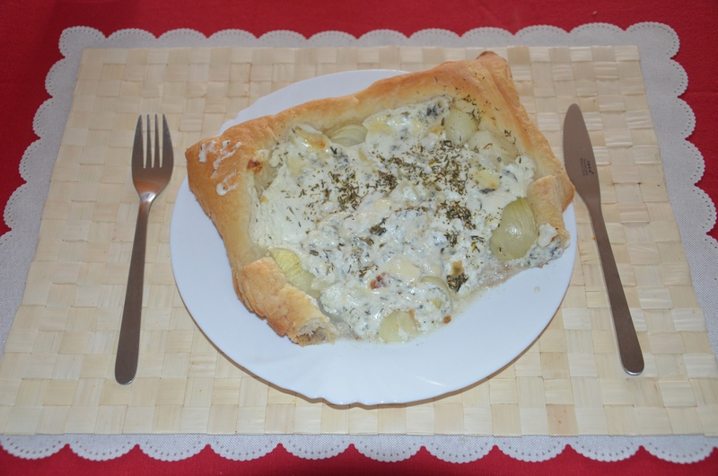

Řekla jsem si, že bych vám (a koneckonců i sobě) mohla zase po delší době udělat chutě a přidat sem nějaký nový recept. Zhruba před měsícem jsem zatoužila opět zaexperimentovat s listovým těstem a vytvořila jsem tento cibulový koláč podle ONA Dnes.
- 400g listového těsta
- 1 velká červená cibule (v obchodě neměli, použila jsem bílou)
- 2 stroužky česneku
- 1 lžíce olivového oleje
- 200ml zakysané smetany
- 100ml smetany
- 100g mozzarelly (lze nahradit i nivou či jiným pikantnějším sýrem)
- sůl, pepř
- čerstvý rozmarýn či jiné oblíbené bylinky
Troubu předehřejeme na 220°C, plech vyložíme pečícím papírem. Těsto rozválíme a vyložíme jím plech. Na tomto místě jen podotýkám, že naše domácnost nedisponuje válem ba ani válečkem :D… Nakonec stačilo trochu zaimprovizovat s deskou na krájení, kterou jsem si vybrala za bodíky z Emca, a Kozlem v plechovce ;-). Cibuli oloupeme, rozpůlíme, nakrájíme na plátky a rozebereme. Česnek oloupeme a utřeme. Cibuli a česnek promícháme s olejem, rozložíme je na těsto a dáme na 12 minut zapéct. Až nám koláč trochu povyskočí, zapečené těsto s cibulí zalijeme směsí, kterou si připravíme smícháním zakysané smetany se smetanou, nadrobno pokrájeným sýrem a solí a pepřem. Koláč ozdobíme natrhaným rozmarýnem či jinými bylinkami a pečeme dalších 12-15 minut.

Hotové dílko :)